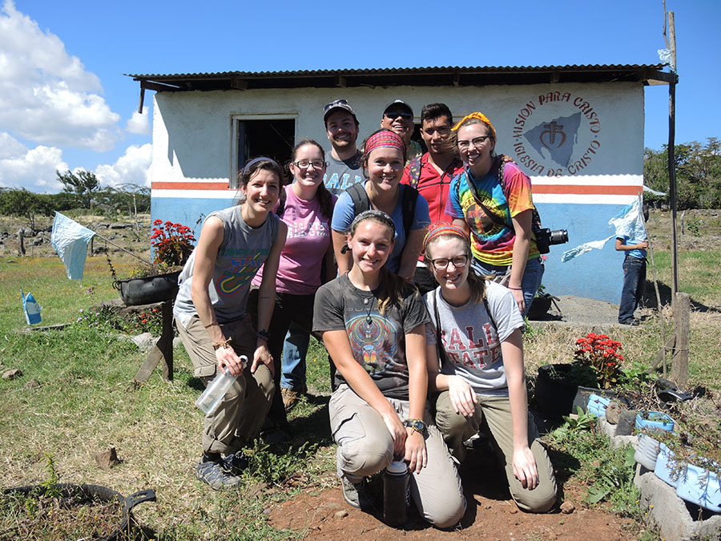
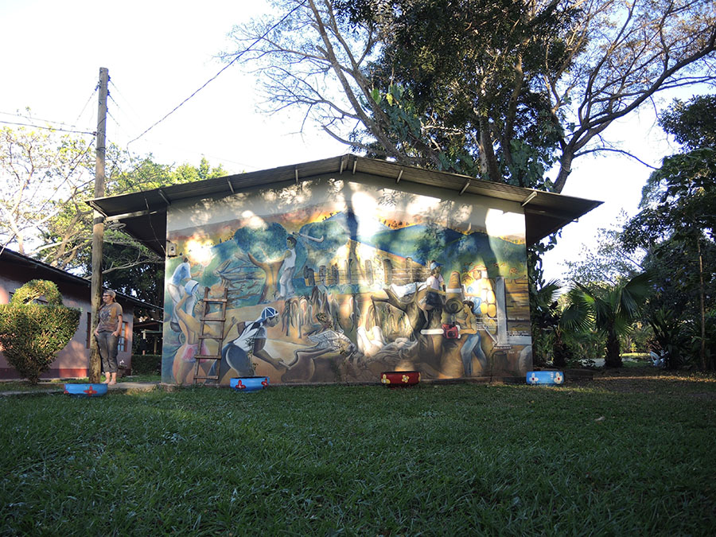
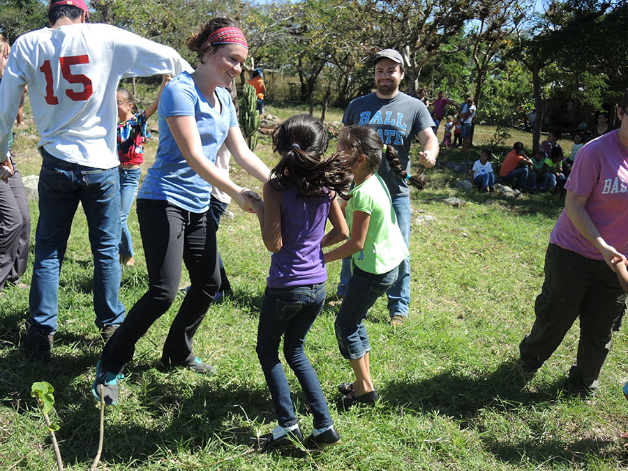
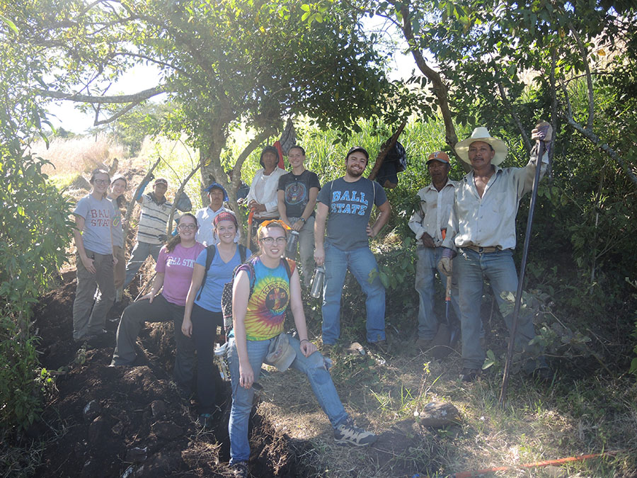

Global Brigades Trip to Nicaragua
Installing a clean water system
As president of the Global Brigades at Ball State Water Brigade, I led a team of Ball State students to Nicaragua in January 2016 to install gravity-fed aqueduct that will serve a remote community outside of Jinotega.
A regular workday consisted of breakfast at the compound, a 1.5-hour drive to our worksite, the morning spent digging the trench with pickaxes and shovels, a brief lunch, more work in the afternoon, a jam session on the drive back to the compound, then a much-needed shower, dinner, and reflections.
Our work was the first stage of an ongoing project that will bring clean water to a remote community outside of Jinotega. Essentially, a clean water aquifer at the bottom of the mountain is piped uphill to a soon-to-be-installed cistern, then piped down the other side to the community. We dug the initial part of the trench in which the pipes will be laid. By the end of our week of work, we had completed about 500 meters.
In addition to the typical workday, we had the great forture of interacting with the community that we were working to bring the clean water. On our last day, we hiked up (and down) the mountain to reach the community. We spent the day giving our educational lessons on the importance of clean water to the children and playing games.
